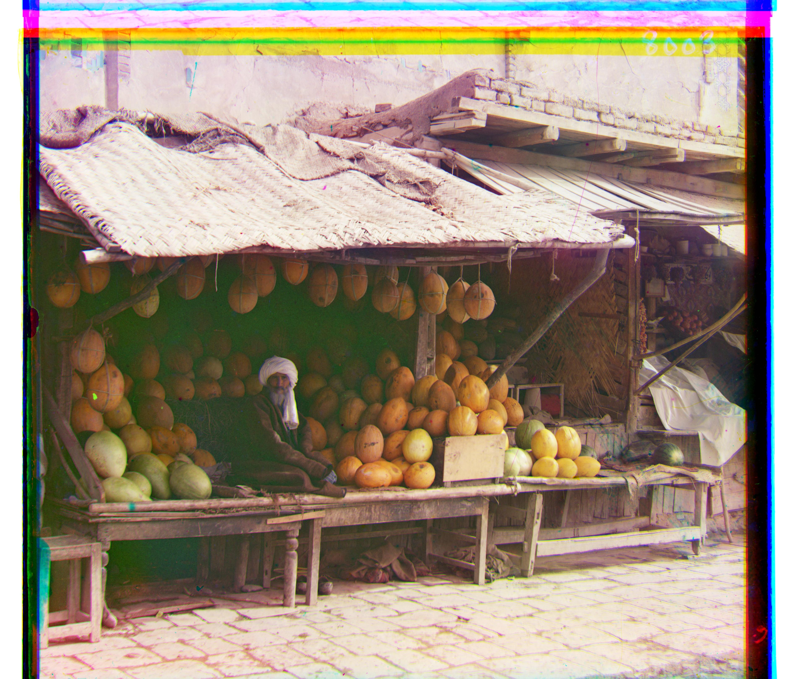
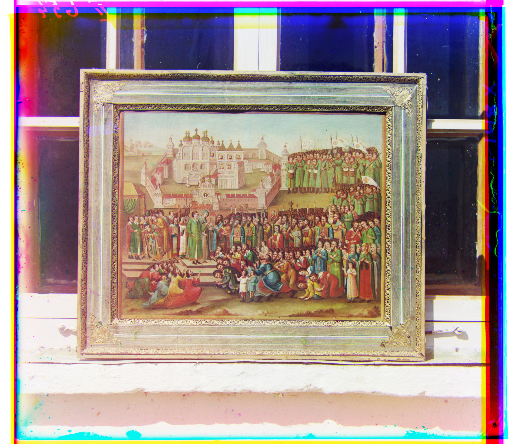

Project Overview
This project reconstructs color images from digitized Prokudin-Gorskii glass plate photographs. Each image contains three grayscale channels (assume blue, green, red) stacked vertically. The goal is to align these channels using image processing techniques and produce a single RGB image with minimal artifacts.
Approach
Single-Scale Alignment
| Image & Details |
|---|

monastery.jpg
Shift (g): (-3, 2) | Shift (r): (3, 2) | Gen Time: 0.11s
|

tobolsk.jpg
Shift (g): (3, 3) | Shift (r): (7, 3) | Gen Time: 0.10s
|

cathedral.jpg
Shift (g): (5, 2) | Shift (r): (12, 3) | Gen Time: 0.10s
|
For single-scale alignment, I exhaustively search over a window ([-15, 15] pixels) of possible (x, y) displacements for the green and red channels relative to the blue channel. For each possible shift, I compute a similarity metric between the cropped reference and shifted channel, selecting the shift with the best score.
Similarity Metrics
- L2 Norm:
sqrt(sum(sum((image1-image2).^2))) - Normalized Cross-Correlation (NCC):
(image1./||image1|| and image2./||image2||)
The intuition of the two methods are similar: When an image is lightened, the pixel values increase, and vice versa. That is to say, the pixel values of two aligned channels often increase or decrease together, leading to a smaller L2 norm and a larger NCC value.
The two methods both work pretty well, and produce very similar results on the three smaller image examples. That suggests both metrics are good enough to produce satisfactory results. However, I choose NCC as the default metric because its relatively better performance and that its computation time overhead is not significant.
Cropping
Singly using the similarity metrics on the full image sometimes produces unsatisfactory results. That's because the three channels all have some artifacts, which can mislead the alignment process.
As the course staff Alexei Efros suggested, both lens imperfections and also photo plate degradations are worse away from the center of the image, it's perfectly fine to crop very aggressively (as much as 2/3rds of the image!).
For my implementation, I crop 30% of the image from each side, leaving the central 40% of the image for alignment. This helps to avoid edge artifacts and focuses on the most relevant parts of the image, which significantly improves the alignment quality.
Multi-Scale Pyramid Alignment
| Image & Details |
|---|
|
emir.jpg
Shift (g): (48, 24) | Shift (r): (-222, -3) | Gen Time: 13.75s
|
|
italil.jpg
Shift (g): (37, 21) | Shift (r): (76, 36) | Gen Time: 19.42s
|

church.jpg
Shift (g): (25, 4) | Shift (r): (58, -4) | Gen Time: 18.70s
|
|
three_generations.jpg
Shift (g): (50, 14) | Shift (r): (110, 12) | Gen Time: 18.66s
|
|
lugano.jpg
Shift (g): (40, -15) | Shift (r): (93, -29) | Gen Time: 19.47s
|
|

melons.jpg
Shift (g): (81, 9) | Shift (r): (179, 12) | Gen Time: 19.38s
|

lastochikino.jpg
Shift (g): (-3, -1) | Shift (r): (75, -8) | Gen Time: 19.18s
|
|
icon.jpg
Shift (g): (41, 18) | Shift (r): (90, 23) | Gen Time: 19.89s
|
|
siren.jpg
Shift (g): (49, -5) | Shift (r): (96, -23) | Gen Time: 20.28s
|

self_portrait.jpg
Shift (g): (78, 29) | Shift (r): (175, 37) | Gen Time: 20.33s
|
|
harvesters.jpg
Shift (g): (59, 17) | Shift (r): (123, 14) | Gen Time: 14.03s
|
For larger images, single-scale alignment can be computationally expensive as the search window increases. To address this, I implement a multi-scale pyramid alignment approach.
Image Pyramid
I create an image pyramid by repeatedly downsampling the image by a factor of 2, creating in total 4 levels (original size, 1/2, 1/4, 1/8). Manually setting this to 4 levels works well for the provided images. Starting from the smallest image, I perform single-scale alignment (with cropping) to find the best shifts for the green and red channels. Then I double them to account for the increased resolution, and use them as the initial shift for the new search on next level image. The search window (in pixel) keeps the same in the whole process. In this refining way, I can use much smaller search windows. (stays 15 pixels even for the largest image)
Failure Case
The approach works for most of the example images, but fails on the image emir.tif (sadly, emir flies into space). As I mentioned, the metrics rely on the assumption that the pixel values of two aligned channels are often high or low together. However in emir.tif, images to be matched do not actually have the same brightness values (they are different color channels). Emir is wearing a blue cloth, which is very bright in the blue channel but very dark in the red channel, while the flower patterns on the cloth are quite the opposite. This violates the assumption and leads to bad alignment. When I reduce the cropping ratio to 10%, the alignment improves a bit, but still not good enough. This result supports the explanation above, since now the alignment is influenced more by the edge environment, which are similar in all three channels.
More Examples!
Here are some result of my algorithm on a few examples of my own choosing, downloaded from the Prokudin-Gorskii collection.
| Image & Details |
|---|

cheremukha.jpg
Shift (g): (-27, -95) | Shift (r): (23, -83) | Gen Time: 16.60s
|
|

religious_painting.jpg
Shift (g): (35, 25) | Shift (r): (52, 38) | Gen Time: 15.09s
|
|
kapri.jpg
Shift (g): (43, -12) | Shift (r): (102, -9) | Gen Time: 15.81s
|